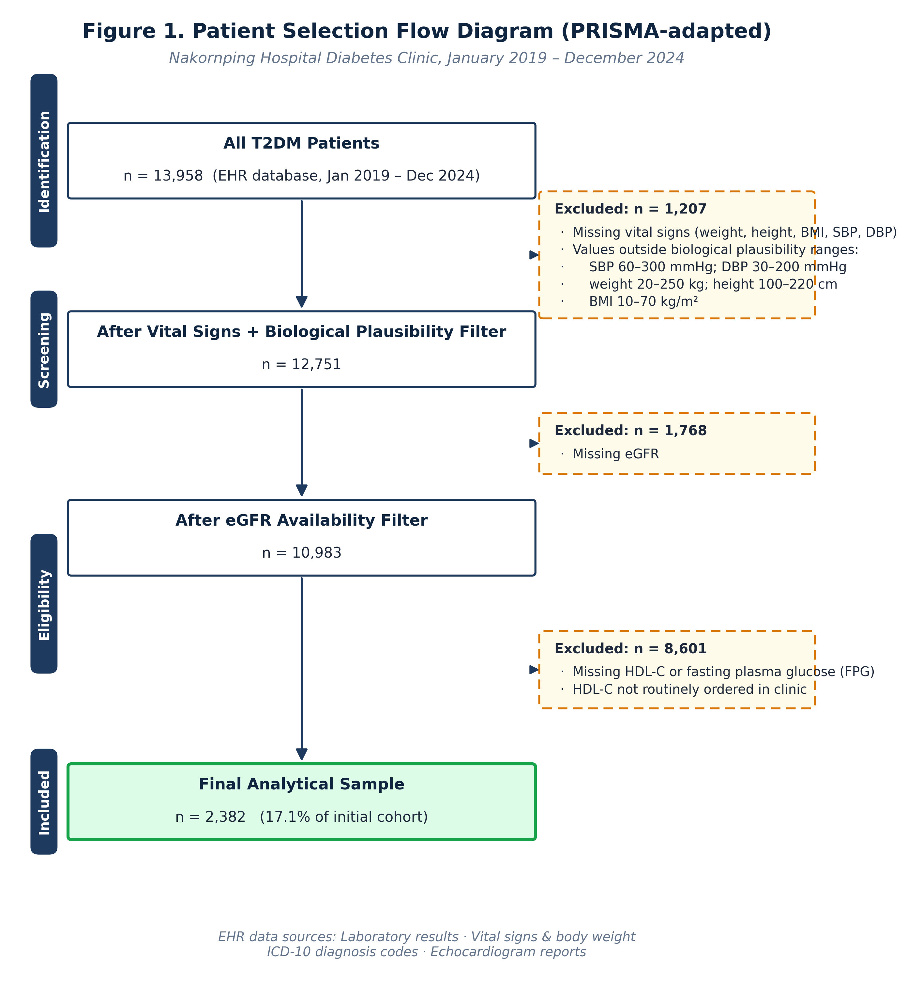

การประเมินความเสี่ยงต่อภาวะหัวใจล้มเหลว 5 ปี ในผู้ป่วยเบาหวานชนิดที่ 2 | คณะเภสัชศาสตร์ มหาวิทยาลัยพะเยา × กลุ่มงานเภสัชกรรม โรงพยาบาลนครพิงค์ 5-year heart failure risk assessment in type 2 diabetes outpatients | School of Pharmaceutical Sciences, University of Phayao × Department of Pharmacy, Nakornping Hospital
ผู้ใหญ่อายุ 20–79 ปีทั่วโลกร้อยละ 11.1 (1 ใน 9) เป็นเบาหวาน และมากกว่า 4 ใน 10 ราย ยังไม่ทราบว่าตนเองเป็นโรคนี้ (IDF 2025) 11.1% of adults aged 20–79 (1 in 9) have diabetes worldwide, and over 4 in 10 are undiagnosed (IDF 2025).
ผู้ป่วยรายใหม่ ~300,000 คน/ปี รวมสะสมกว่า 5.1 ล้านคน (ปีงบประมาณ 2567) ~300,000 new cases/year, cumulative total over 5.1 million (Thai NCD report FY2024).
เสี่ยง HF สูงกว่าประชากรทั่วไป 2 เท่า (เพศชาย) และ 5 เท่า (เพศหญิง) อัตราตาย 3 เท่า เมื่อเกิด HF ร่วม HF risk is 2× in men and 5× in women vs. general population; 3× mortality when HF co-exists with T2DM.
การศึกษานี้มีวัตถุประสงค์เพื่อ ประเมินและจำแนกระดับความเสี่ยงต่อการเกิดภาวะหัวใจล้มเหลว (HF) ใน 5 ปี ของผู้ป่วยเบาหวานชนิดที่ 2 ที่รับการรักษาในคลินิกเบาหวานผู้ป่วยนอก โรงพยาบาลนครพิงค์ โดยใช้คะแนนความเสี่ยง WATCH-DM This study aims to assess and stratify 5-year heart failure (HF) risk in type 2 diabetic patients receiving care at the outpatient diabetic clinic of Nakornping Hospital using the WATCH-DM risk score.
พัฒนาโดย Segar MW et al. (Diabetes Care, 2019) เป็น machine-learning–derived integer-point score สำหรับทำนายอุบัติการณ์การเกิด HF ใน 5 ปีในผู้ป่วย T2DM ใช้ตัวแปรทางคลินิก 10 ตัวแปร คะแนนรวมสูงสุด 32 ความแม่นยำ AUC = 0.747 Developed by Segar et al. (Diabetes Care, 2019), WATCH-DM is a machine-learning–derived integer-point score predicting 5-year incident HF in T2DM patients, using 10 clinical variables for a maximum total of 32 points (AUC = 0.747).
การวิจัยเชิงวิเคราะห์แบบย้อนหลัง (Retrospective Analytical Study) ระยะเวลา 6 ปี (ม.ค. 2562 – ธ.ค. 2567) Retrospective analytical study over a 6-year period (Jan 2019 – Dec 2024).
โรงพยาบาลนครพิงค์ จ.เชียงใหม่ — โรงพยาบาลตติยภูมิภาคเหนือ คลินิกเบาหวานผู้ป่วยนอก Nakornping Hospital, Chiang Mai — a tertiary care hospital in northern Thailand, outpatient diabetic clinic.
ระบบเวชระเบียนอิเล็กทรอนิกส์ (EHR): ผลตรวจห้องปฏิบัติการ · สัญญาณชีพและน้ำหนัก · รหัส ICD-10 · รายงาน Echocardiogram Hospital EHR: laboratory results · vital signs & body weight · ICD-10 codes · echocardiogram reports.
Kruskal–Wallis test (ตัวแปรต่อเนื่อง), Chi-squared test (ตัวแปรเชิงหมวดหมู่), Mann–Whitney U + Bonferroni สำหรับ pairwise comparisons; α = 0.05 Kruskal–Wallis (continuous), Chi-squared (categorical), and pairwise Mann–Whitney U with Bonferroni correction; α = 0.05.
① eGFR ทดแทน SCr (CKD-EPI 2021) · ② QRS จาก echo report keyword (LBBB / RBBB / PPM = 3 pts) แทน ECG numeric ① eGFR as surrogate for SCr (CKD-EPI 2021) · ② QRS from echo report keywords (LBBB / RBBB / PPM = 3 pts) substituting ECG numeric.
คณะกรรมการการวิจัยในมนุษย์ โรงพยาบาลนครพิงค์ NKP No.057/68 (22 พ.ค. 2568) Nakornping Hospital IRB NKP No.057/68 (22 May 2025).
| ตัวแปรVariable | เกณฑ์ที่ยอมรับAccepted range |
|---|---|
| SBP | 60–300 mmHg |
| DBP | 30–200 mmHg |
| น้ำหนักWeight | 20–250 kg |
| ส่วนสูงHeight | 100–220 cm |
| BMI | 10–70 kg/m² |
| ประวัติHistory | รหัสCodes |
|---|---|
| Prior MI | I21.x, I22.x, I25.2 |
| Prior CABG | Z95.1 (diagnosis or operation field) |
| HF (sensitivity) | I50.x |
หมายเหตุ: HF status ใช้สำหรับ sensitivity analysis (prevalent vs. incident HF) Note: HF status used for sensitivity analysis (prevalent vs. incident HF).

ภาพที่ 1. กระบวนการคัดเลือกผู้ป่วยจากฐานข้อมูล EHR (n = 13,958) สู่กลุ่มตัวอย่างวิเคราะห์ขั้นสุดท้าย (n = 2,382 หรือร้อยละ 17.1 ของกลุ่มเริ่มต้น) Figure 1. Patient selection cascade from the EHR database (n = 13,958) to the final analytical cohort (n = 2,382; 17.1% of the initial cohort).
| ขั้นตอนStep | n | สาเหตุReason |
|---|---|---|
| (i) | 1,207 | ขาดสัญญาณชีพ/มวลร่างกาย หรือค่าที่ไม่สมเหตุสมผลทางชีววิทยา Missing vitals/body weight or values outside biological plausibility ranges |
| (ii) | 1,768 | ขาดข้อมูล eGFR Missing eGFR |
| (iii) | 8,601 | ขาดข้อมูล HDL-C หรือ FPG (HDL-C ไม่ได้ตรวจเป็นประจำในคลินิกเบาหวาน) Missing HDL-C or FPG (HDL-C not routinely ordered in the clinic) |
| ตัวแปรVariable | VL n=1,214 |
L n=574 |
Avg n=206 |
H n=330 |
VH n=58 |
รวมTotal n=2,382 |
p |
|---|---|---|---|---|---|---|---|
| WATCH-DM score | ≤7 | 8–9 | 10 | 11–13 | ≥14 | 0–18 | — |
| คะแนน mean±SDScore (mean±SD) | 5.2±1.4 | 8.5±0.5 | 10.0±0.0 | 11.7±0.8 | 14.8±1.0 | 7.6±2.9 | <0.001 |
| อายุ (ปี)Age (years) | 59.1±12.2 | 67.2±7.7 | 69.7±7.3 | 73.2±7.8 | 77.4±6.7 | 64.3±11.7 | <0.001 |
| BMI (kg/m²) | 26.3±5.1 | 26.7±5.2 | 27.4±5.8 | 27.1±5.5 | 27.2±5.1 | 26.6±5.3 | 0.008 |
| SBP (mmHg) | 131.9±17.1 | 137.8±45.2 | 137.1±18.5 | 142.2±22.0 | 148.1±21.5 | 135.6±27.7 | <0.001 |
| DBP (mmHg) | 78.6±22.7 | 75.6±13.0 | 72.7±14.1 | 73.5±14.7 | 70.2±13.2 | 76.5±19.0 | <0.001 |
| FPG (mg/dL) | 136.0±48.5 | 136.1±49.0 | 136.6±44.8 | 148.2±63.7 | 140.5±44.8 | 137.9±50.8 | 0.008 |
| HDL-C (mg/dL) | 51.4±13.7 | 50.9±13.1 | 47.4±12.1 | 48.0±13.0 | 44.4±10.8 | 50.3±13.3 | <0.001 |
| eGFR (mL/min/1.73 m²) | 84.9±22.3 | 69.2±25.9 | 59.2±25.8 | 49.0±21.5 | 32.8±17.4 | 72.6±27.4 | <0.001 |
| Prior MI n (%) | 5 (0.4%) | 18 (3.1%) | 13 (6.3%) | 20 (6.1%) | 6 (10.3%) | 62 (2.6%) | <0.001 |
| Wide QRS n (%) | 0 (0.0%) | 0 (0.0%) | 1 (0.5%) | 1 (0.3%) | 0 (0.0%) | 2 (0.1%) | — |
| Prior CABG n (%) | 0 (0.0%) | 0 (0.0%) | 0 (0.0%) | 0 (0.0%) | 0 (0.0%) | 0 (0.0%) | — |
หมายเหตุ: Kruskal–Wallis test (ตัวแปรต่อเนื่อง); Chi-squared test (ตัวแปรเชิงหมวดหมู่). "—" = ไม่ได้ทดสอบทางสถิติเนื่องจาก sparse data (n ≤ 2 รวมทั้งกลุ่ม) จึงรายงานแบบพรรณนา Continuous variables: Kruskal–Wallis; categorical: Chi-squared. "—" = not tested due to sparse data (n ≤ 2 total); descriptive reporting only.
ตรวจสอบประวัติ HF จากรหัส ICD-10 (I50.x) พบ prevalent HF 65 ราย (2.7%) และ incident HF 70 ราย (2.9%) เมื่อทดสอบ sensitivity โดยตัด prevalent HF ออก พบการกระจายของกลุ่มความเสี่ยงเปลี่ยนแปลง ไม่เกิน 0.5% ในทุกระดับ บ่งชี้ว่าผลการจำแนกความเสี่ยงมีความ robust ต่อการรวม prevalent HF HF status was identified from ICD-10 codes (I50.x): 65 prevalent HF (2.7%) and 70 incident HF (2.9%). Sensitivity analysis excluding prevalent HF showed changes of ≤0.5 percentage points across all five risk groups — risk classification was robust.
WATCH-DM score by HF status (Kruskal–Wallis H = 9.33, p = 0.009): No HF 7.52 ± 2.87 | Incident HF 7.76 ± 3.15 | Prevalent HF 8.51 ± 2.89 · Mann–Whitney U + Bonferroni: Prevalent vs No HF, p = 0.009 Mann–Whitney U + Bonferroni: Prevalent vs. No HF, p = 0.009
แนวทางต่อไปนี้เป็นข้อเสนอแนะเชิงประยุกต์ (suggested implication) จำเป็นต้องได้รับการศึกษาเพิ่มเติมในรูปแบบ pragmatic clinical trial เพื่อยืนยันประโยชน์ทางคลินิก The following are suggested implications and require pragmatic clinical trials to confirm clinical benefit.
| กลุ่มGroup | คะแนนScore | n (%) | การดูแลโดยเภสัชกรPharmacist role | การติดตามFollow-up |
|---|---|---|---|---|
| Very Low | ≤7 | 1,214 (51.0%) | คำแนะนำทั่วไป ปรับพฤติกรรมGeneral counseling, lifestyle | ปีละ 1 ครั้งYearly |
| Low | 8–9 | 574 (24.1%) | คำแนะนำเข้มข้นขึ้น ตรวจ adherenceIntensified counseling, adherence check | ทุก 6 เดือนEvery 6 months |
| Average | 10 | 206 (8.6%) | Pharmaceutical care เชิงรุกProactive pharmaceutical care | ทุก 3–6 เดือนEvery 3–6 months |
| High | 11–13 | 330 (13.9%) | ⚠️ Proactive care, ส่งต่อแพทย์ประเมิน HF⚠️ Proactive care, refer for HF evaluation | ทุก 1–3 เดือนEvery 1–3 months |
| Very High | ≥14 | 58 (2.4%) | 🚨 ส่งต่อแพทย์โรคหัวใจ ติดตามอาการ HF ทุก visit🚨 Refer to cardiology; monitor HF symptoms at every visit | ทุก 1 เดือน หรือ PRNMonthly or PRN |
† eGFR แทน SCr · ‡ ใช้ echo report keyword (LBBB/RBBB/PPM) แทน ECG numeric † eGFR substitutes SCr · ‡ echo report keywords substitute ECG numeric
| ตัวแปรVariable | เกณฑ์Criterion | คะแนนPoints | ตัวแปรVariable | เกณฑ์Criterion | คะแนนPoints |
|---|---|---|---|---|---|
| อายุ (ปี)Age (yr) | <50 | 0 | FPG (mg/dL) | <125 | 0 |
| 50–54 | 1 | 125–199 | 1 | ||
| 55–59 | 2 | 200–299 | 2 | ||
| 60–64 | 3 | ≥300 | 3 | ||
| 65–69 | 4 | HDL-C* (mg/dL) | ≥60 | 0 | |
| 70–74 | 5 | 30–59 | 1 | ||
| ≥75 | 6 | <30 | 2 | ||
| BMI (kg/m²) | <25 | 0 | eGFR† (mL/min) | >60 | 0 |
| 25–34 | 1 | 30–60 | 2 | ||
| 35–39 | 2 | <30 | 5 | ||
| ≥40 | 3 | QRS‡ | แคบNarrow | 0 | |
| SBP (mmHg) | <100 | 0 | LBBB / RBBB / PPM | 3 | |
| 100–139 | 1 | Prior MI | มีYes | 3 | |
| 140–159 | 2 | Prior CABG | มีYes | 2 | |
| ≥160 | 3 | คะแนนรวมสูงสุดMax total | 32 pts | ||
| DBP* (mmHg) | ≥80 | 0 | *Inverse scoring (ยิ่งต่ำ ยิ่งได้คะแนนมาก)Inverse scoring (lower = more points) · † แทนSubstitutes SCr · ‡ จาก echo report keywordFrom echo report keywords | ||
| 60–79 | 1 | ||||
| <60 | 2 | ||||
| กลุ่มGroup | คะแนนScore | ความเสี่ยง HF 5 ปี (โดยประมาณ)5-yr HF risk (approx.) |
|---|---|---|
| Very Low | ≤7 | <5% |
| Low | 8–9 | 5–10% |
| Average | 10 | 10–15% |
| High | 11–13 | 15–25% |
| Very High | ≥14 | >25–30% |
หมายเหตุ: ตัวเลขความเสี่ยงเป็นค่าประมาณจาก Segar et al. (2019) และ Iwakura et al. (2024) ไม่ใช่ calibrated probability สำหรับประชากรไทยโดยตรง Note: risk estimates are approximations from Segar et al. (2019) and Iwakura et al. (2024); not a calibrated probability for the Thai population.
ซอร์สโค้ดเต็มของ analysis pipeline (Python) + visualization notebooks + data dictionary — เผยแพร่ภายใต้สัญญาอนุญาต MIT Full Python analysis pipeline + visualization notebooks + data dictionary — released under the MIT License.
github.com/kkhanitadu/WATCH-DM
บันทึกเวอร์ชัน archived พร้อม DOI สำหรับการอ้างอิงวิชาการ — Published May 13, 2026 Versioned archive with citable DOI — Published May 13, 2026.
doi.org/10.5281/zenodo.20165070
คณิตา ดวงแจ่มกาญจน์ และคณะ. การประเมินความเสี่ยงต่อการเกิดภาวะหัวใจล้มเหลวในผู้ป่วยเบาหวานชนิดที่ 2 ด้วยคะแนนความเสี่ยง WATCH-DM ในคลินิกเบาหวานผู้ป่วยนอก โรงพยาบาลนครพิงค์. วารสารเภสัชกรรมไทย 2569;18(4). (อยู่ระหว่างการตีพิมพ์). Duangchaemkarn K, et al. Assessment of 5-year heart failure risk in type 2 diabetic patients using the WATCH-DM risk score in an ambulatory diabetic clinic, Nakornping Hospital. Thai Journal of Pharmacy Practice. 2026;18(4). In press.
Duangchaemkarn K. WATCH-DM: Reproducible Analysis Pipeline for 5-Year Heart Failure Risk Assessment in Type 2 Diabetic Patients at Nakornping Hospital (v0.1.0). Zenodo. 2026. https://doi.org/10.5281/zenodo.20165070